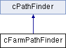

#include <cFarmPathFinder.h>
Inheritance diagram for cFarmPathFinder:

Public Member Functions | |
| void | read (const std::string &fname) |
| read input file More... | |
 Public Member Functions inherited from cPathFinder Public Member Functions inherited from cPathFinder | |
| void | read (const std::string &fname) |
| read input file More... | |
| void | addLink (int u, int v, float cost) |
| Add costed undirected link between two nodes. More... | |
| void | clear () |
| void | start (int start) |
| set staring node More... | |
| void | start (const std::string &start) |
| int | start () const |
| void | end (int end) |
| set ending node, index More... | |
| void | end (const std::string &end) |
| set ending node, name More... | |
| void | path () |
| Find optimum path from start to end node. More... | |
| void | paths (int start) |
| Find paths from start to all nodes. More... | |
| void | pathPick (int end) |
| Find path to end node, after call to paths( int start ) More... | |
| void | span () |
| Find minimum edge set that connects all nodes together. More... | |
| std::string | linksText () |
| Human readable list of links. More... | |
| std::string | pathText () |
| Human readable path list. More... | |
| std::string | spanText () |
| Human readable list of edges that connects all nodes together. More... | |
| std::string | pathViz () |
| graphical display of graph with path in red. More... | |
| std::string | pathViz (const std::vector< int > &vp, bool all=true) |
| std::string | spanViz (bool all=true) |
| graphical display of graph with spanning tree More... | |
| int | findoradd (const std::string &name) |
| Find or add node by name. More... | |
| int | find (const std::string &name) |
| Find node by name. More... | |
| std::vector< std::string > | ParseSpaceDelimited (const std::string &l) |
| Parse Space Delimited line. More... | |
| bool | IsAdjacent (int u, int v) |
| true if link between nodes More... | |
| bool | IsConnected () |
| true if all nodes are connected together More... | |
| int | nodeCount () |
| int | linkCount () |
| std::string | nodeColor (int n) |
| std::string | nodeName (int n) |
| void | directed (bool f=true) |
| set graph links type More... | |
Additional Inherited Members | |
| Protected Types inherited from cPathFinder | |
| typedef boost::adjacency_list< boost::listS, boost::vecS, boost::undirectedS, cNode, cEdge > | graph_t |
| typedef boost::adjacency_list< boost::listS, boost::vecS, boost::directedS, cNode, cEdge > | dir_graph_t |
| Protected Member Functions inherited from cPathFinder | |
| template<typename T > | |
| std::string | linksTextT (T &g) |
| template<typename T > | |
| void | pathsT (int start, T &g) |
| Protected Attributes inherited from cPathFinder | |
| graph_t | myGraph |
| dir_graph_t | myDirGraph |
| int | myStart |
| int | myEnd |
| std::vector< int > | myPath |
| std::vector< int > | myDist |
| std::vector< int > | myPred |
| std::vector< std::vector< int > > | mySpan |
| int | mySpanCost |
| bool | myfDirected |
Member Function Documentation
◆ read()
| void cFarmPathFinder::read | ( | const std::string & | fname | ) |
read input file
The documentation for this class was generated from the following files:
- C:/Users/James/code/PathFinder/src/cFarmPathFinder.h
- C:/Users/James/code/PathFinder/src/cFarmPathFinder.cpp